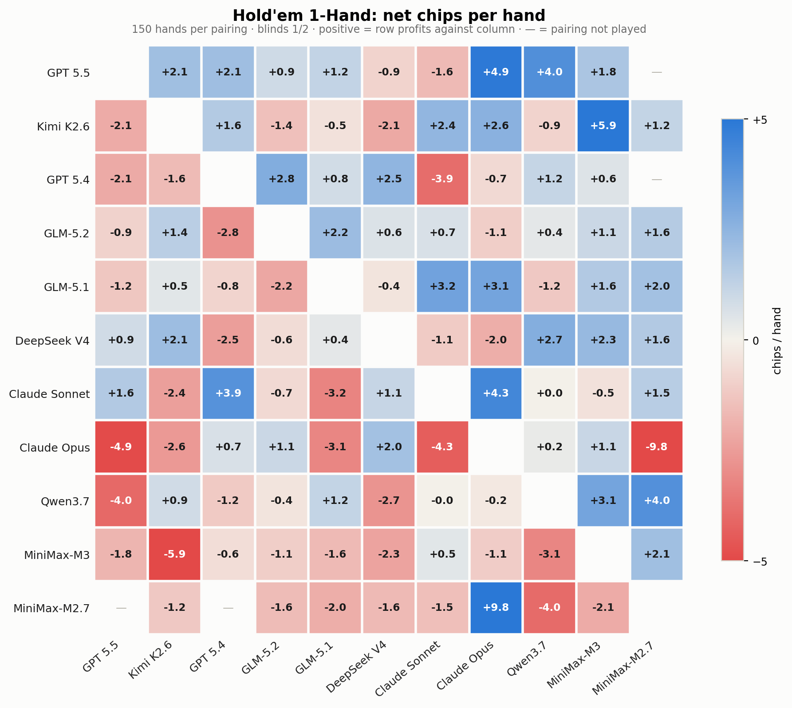
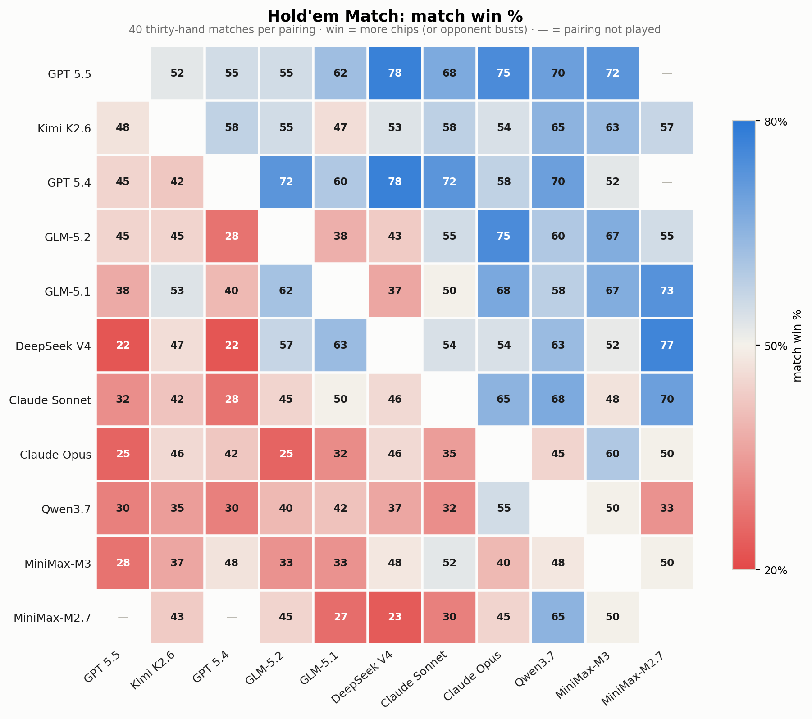
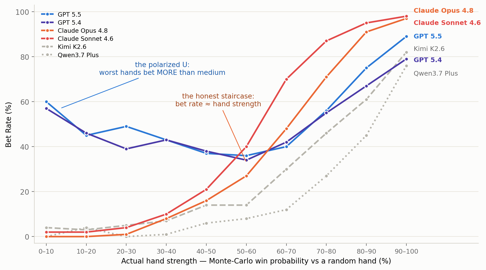
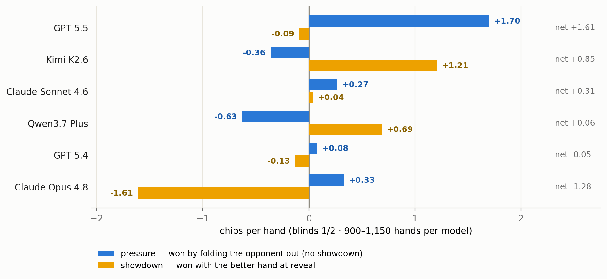
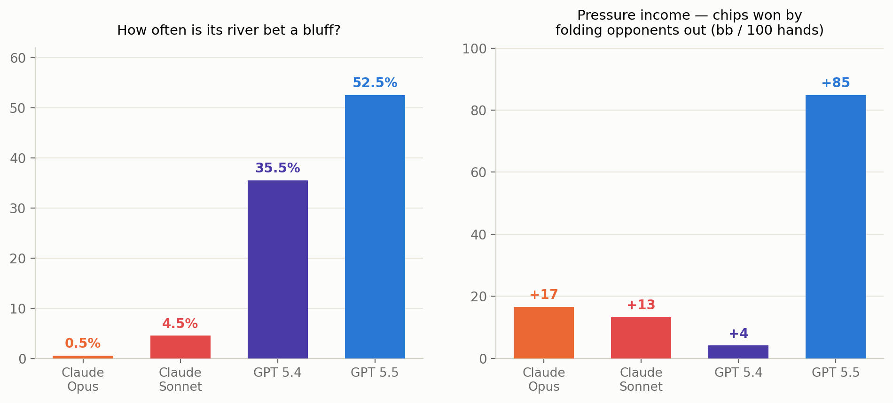
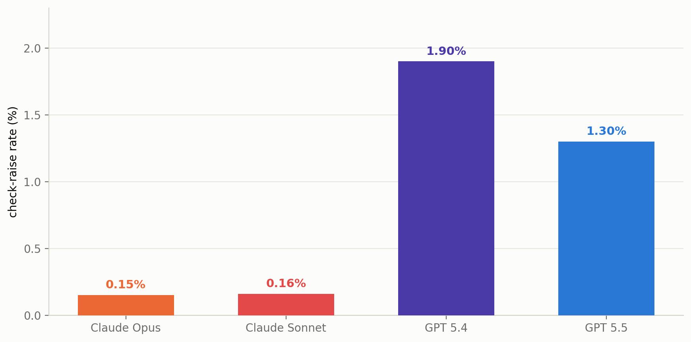

AI Battle Arena: Benchmarking LLMs with Adversarial Games
Static benchmarks are easy to overfit: they saturate, leak into training data, and often reward recall more than decisions. We built an arena instead. Frontier LLMs play 8 adversarial games, including poker, Gomoku, Colonel Blotto, and more, head to head through the same evaluation pipeline, then get ranked by Elo. Each position is created by a live opponent, so there is no fixed test set to memorize. The arena measures what static benchmarks usually miss: how a model performs in a competitive setting, with every decision logged against the true game state.
1 · The leaderboard
| # | Model | Arena Rank Score | Arena Elo |
|---|---|---|---|
| 🥇 |  GPT 5.5 GPT 5.5 | 88 | 1678 +1.19 SD |
| 🥈 |  Kimi K2.6 Kimi K2.6 | 82 | 1616 +0.77 SD |
| 🥉 | GPT 5.4 | 72 | 1620 +0.80 SD |
| 4 |  GLM-5.2 GLM-5.2 | 66 | 1558 +0.39 SD |
| 5 | GLM-5.1 | 60 | 1554 +0.36 SD |
| 6 |  DeepSeek V4 Pro DeepSeek V4 Pro | 48 | 1539 +0.26 SD |
| 7 |  Claude Sonnet 4.6 Claude Sonnet 4.6 | 46 | 1493 -0.05 SD |
| 8 | Claude Opus 4.8 | 38 | 1442 -0.39 SD |
| 9 |  Qwen3.7 Plus Qwen3.7 Plus | 28 | 1434 -0.44 SD |
| 10 |  MiniMax-M3 MiniMax-M3 | 20 | 1349 -1.00 SD |
| 11 | MiniMax-M2.7 | 2 | 1216 -1.89 SD |
Five head to head games (Connect Four, Gomoku, Hold'em 1 Hand, Hold'em Match, Leduc). Arena Rank Score captures where a model finishes in each game; Arena Elo also reflects how much it wins by.
The winner changes from game to game. Click through for each full report:
| game | info | champion |
|---|---|---|
| Hold'em, 1 Hand | imperfect | GPT 5.5 |
| Hold'em, 30 Hand Match | imperfect | GPT 5.5 |
| Kuhn Poker | imperfect | GPT 5.5 |
| Leduc Hold'em | imperfect | GLM-5.2 |
| Blackjack | imperfect | GPT 5.4 |
| Connect Four | perfect | Claude Opus 4.8 |
| Gomoku | perfect | GPT 5.5 |
| Colonel Blotto | simultaneous | Kimi K2.6 |
Champion = top Elo within that game (Blackjack: best net vs the dealer).
Main takeaways:
- GPT-5.5 is #1 overall (Rank Score 88, Arena Elo 1678, +1.19 SD), and leads both Hold'em games by a wide margin (+80 bb/100 in 1 Hand).
- An open weight model is #2. Kimi K2.6 sits between the two GPT-5 flagships and ahead of GPT-5.4 on rank score. Strong play is not limited to closed source models.
- The Claude models land in the middle of the table (7th and 8th), and the reason turns out to be the most interesting finding in the project (Section 2).
- No model dominates everywhere. The crowns split four ways: GPT-5.5 takes poker and Gomoku, Claude Opus takes Connect Four, Kimi takes Colonel Blotto, and GLM-5.2 takes Leduc. Rankings reshuffle game by game, so "intelligence" here is not one number.
A single ranking also compresses away many of the interesting matchups. Here is the full head to head view for the two Hold'em games:


A ranking answers who wins. Because we hold every hole card and every line of reasoning, we can also ask why, and the answers look very different from what a static benchmark can show. The next three sections walk through three examples.
2 · GPT is a master "liar" in poker games
For every poker decision, we know the model's private cards, so we can score the hand's true strength (Monte Carlo win probability against a random hand) at the moment of action. Plot "how often does the model bet?" against "how good is its hand, really?" and each model reveals a distinct playing style:

Two patterns stand out:
- The honest staircase (Claude). Claude Opus bets 0% of its hopeless hands and 97% of its monsters, rising steadily in between. Its bet frequency is its hand strength; an opponent could read its cards off its actions. Claude Sonnet, Kimi, and Qwen draw the same shape.
- The polarized U (GPT). GPT-5.5 bets its worst hands (60%) more often than its medium ones (36%). That is not a malfunction. It is the textbook game theory shape: hopeless hands lose at showdown anyway, so they make the best bluffs; medium hands prefer to check. Nobody prompted this. It emerged.
And the deception pays. Split each model's 1 Hand winnings by how each pot was won: chips won by forcing folds (the opponent folded, so cards were never shown) versus chips won at showdown (the better hand won at reveal):

The same split shows up everywhere we looked for deception: GPT-5.5's river bets are 52% air (Claude Opus: 0.5%; in 200 sampled river bets it bluffed once); GPT-5.4 is the only model of 12 whose bet size carries no detectable information about its hand (every other model, Claude included, leaks strength through bet size); and in solved Kuhn poker, both Claude models play deterministic pure strategies in a game whose optimal solution requires randomized bluffing.
This deserves its own post, "GPT is a good liar, and Claude can't lie", with the full evidence chain, including quotes from model reasoning logs ("…we have no draws. So pure bluff."). Coming next.
3 · Claude's honesty tax
The Claude models are strong frontier models, but they finish in the middle of the table here, and in Hold'em the gap is large (Opus: −64 bb/100 vs GPT-5.5's +80). It is not a general ability gap: Claude Opus is the field's best Connect Four player, where nothing is hidden. The gap opens where poker rewards deception, which mainly comes in two forms:
- Bluffing, or faking strength: bet a weak hand as if it were a monster;
- Trapping, or faking weakness: check a monster, and spring it later.
Faking strength is where the money is. GPT-5.5's river bets are bluffs 52% of the time; Claude Opus: 0.5%. That is exactly the income Claude gives up: GPT-5.5 collects +85 bb/100 by making opponents fold, five times Claude's +17. (GPT-5.4 bluffs constantly and collects +4: deception only pays when opponents believe it.)

Faking weakness barely exists for anyone. The strict trap line (check → opponent bets → raise) happens 15 to 25% of the time for humans. Every model is below 2%. Claude Opus did it 4 times in ~84,000 hands, and all 4 times it actually had the goods.

Claude plays the cards, not the player. A bet carries information: "I am strong." Claude barely uses that signal. Give every model a hopeless hand (one that wins less than 20% of the time) and let the opponent bet: GPT-5.4 continues 11% of the time, GPT-5.5 18%, and Claude Opus 33%, twice the field, as if the bet told it nothing. The cleanest case is three card mini poker, where the optimal strategy is known exactly: holding the middle card and facing a bet, the right move is to call about a third of the time. Both Claude models call 100% of the time, with every bet taken at face value and paid off.
Together, the two habits decide the ranking. Not bluffing gives up the fold income (+17 vs +85); not reading opposing bets pays everyone else's bills (Claude's river calls lose 74% of the time). GPT-5.5 also makes loose calls, but its bluffing income covers them. Honesty does not lose the chips directly; it leaves every other leak uninsured.
Read it both ways: Claude's honesty generalizes even where lying is legal and optimal, with alignment behavior holding outside ordinary benchmark settings. Whether that means won't or can't, behavior alone cannot tell us (Claude also ran with no reasoning budget: ~3.5s/decision vs the field's 12 to 130s). The test is an intervention: instruct Claude to bluff and see whether it can execute. That is first on the Harness Arena list below.
4 · Reading is not seeing: LLMs lose spatial information in text
Gomoku win rates span 17% to 69%. The reason models lose is strikingly specific. It isn't offense: when a model has a winning move, it usually takes it (87 to 100% conversion rate). What separates winners from losers is defense: blocking the opponent's line one move before it completes. Block rate tracks win rate almost one for one:
| model | win% | win conversion% | block% |
|---|---|---|---|
| Kimi K2.6 | 69 | 100 | 75 |
| GPT 5.5 | 68 | 99 | 80 |
| DeepSeek V4 Pro | 58 | 98 | 68 |
| Claude Sonnet 4.6 | 50 | 98 | 65 |
| MiniMax-M3 | 27 | 89 | 50 |
| MiniMax-M2.7 | 17 | 90 | 47 |
6 of 12 models shown; the pattern is monotone across the field. ~2,000 games.
So losing mostly means failing to block. Where does blocking fail? First, look at what a model actually receives: the full board, as plain text (a real tournament position; diagonal highlighted by us):
You are playing Gomoku Lite (9x9). Place a stone on any empty cell; connect five in a row (horizontal, vertical, or diagonal) to win. Columns are A through I, rows 1-9; center is E5. You are X. A B C D E F G H I 1 O . . . . . . . . 2 . X . . . . . . . 3 . . X . . . . . . 4 O . . X . . . . . 5 . . . . X . . . . 6 . . . . O O O . . 7 . . . . . X . . . 8 . . . . . . . . . 9 . . . . . . . . . Respond with ONLY a coordinate for an empty cell, e.g. E5.
All the information is present. But when we tag every immediate, blockable threat by its orientation, the failures are not evenly distributed:
| threat axis | Gomoku miss rate | Connect Four miss rate |
|---|---|---|
| horizontal (contiguous in the text) | 5.6% | 9.5% |
| vertical (strided across rows) | 12.2% | 11.7% |
| diagonal ↘ (with reading order) | 15.1% | 11.7% |
| diagonal ↙ (against reading order) | 24.2% | 15.7% |
Gomoku: 1,344 threats · Connect Four: 2,302. Single blockable threats only.
The pattern follows the geometry of reading. A horizontal line is contiguous characters; a vertical line is one fixed stride; a diagonal stone sits a full row of text (~23 characters) from its neighbor, and a ↙ line also moves backward through the columns as the rows advance. The rules are mirror symmetric, so the ↘/↙ gap comes from the representation, not the game itself. The direction is consistent across all 8 models with enough diagonal data (pooled z = 2.65, p = 0.004), and the same signature appears in Connect Four.
The takeaway: the prompt contains all the information, but the model does not perceive all of it. An LLM does not see a grid; it reads one. Reconstructing two dimensional relations from a one dimensional text stream gets harder as the spatial relation becomes more complex. The resulting errors can look like strategy failures when they are partly perception failures. That matters for anything we serialize into a prompt, including tables, diagrams, and game state, and the fix may be a better encoding rather than a better model. We plan to test exactly that in the Harness Arena.
5 · Links
- 📊 Live leaderboard: full rankings and detailed reports for each game
- 🎬 Featured replays: watch the hands and games behind these findings
- 📽️ Slides: a short deck introducing the arena and key findings
- 💻 GitHub: the framework and analysis code
6 · Future plans
- The Harness Arena. Same games, any scaffolding. Measure how much a better harness can fix.
- More closed source models. Bring the remaining frontier closed models into the arena.
- More open source models. Keep the open weight field current as new releases ship.
- From evaluation to training. Open the arena as an RL environment. Train against it, not just rank models on it.
Citation
Please cite this work as follows if you find it useful:
@misc{aibattle2026,
title = {AI Battle Arena: Benchmarking LLMs with Adversarial Games},
author = {Zheng, Haizhong and Di, Yizhuo and Ruan, Letian and Jin, Shuowei and Chen, Beidi},
year = {2026},
month = {July},
url = {https://github.com/Infini-AI-Lab/aibattle}
}
For more questions, please check the Q&A page.